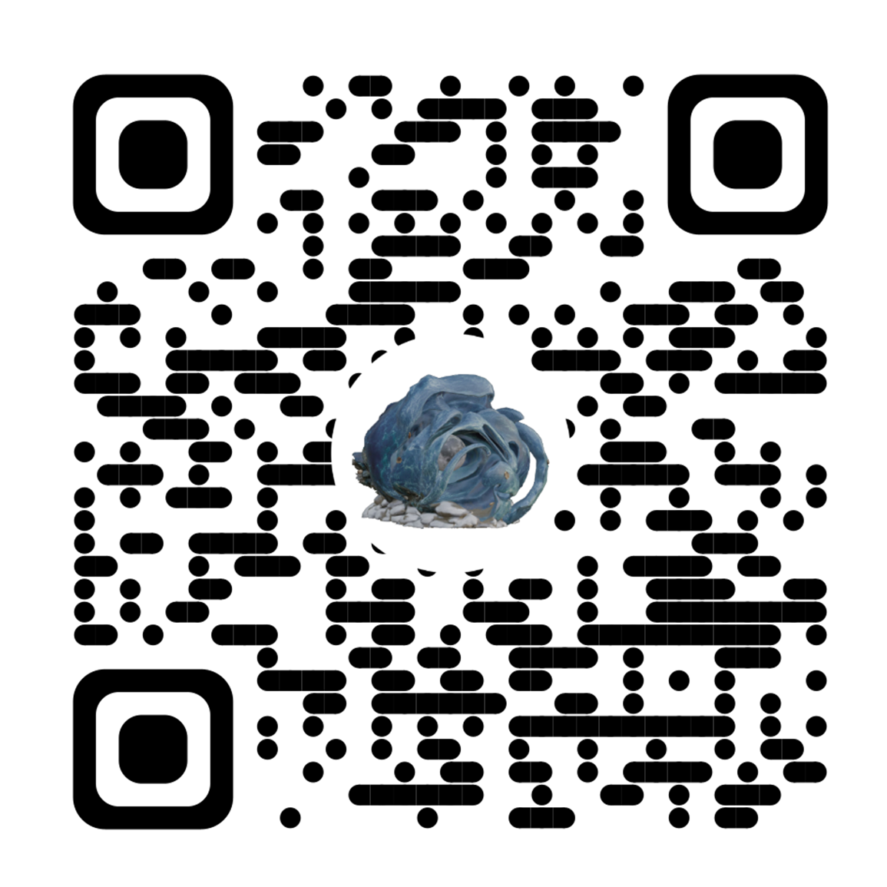

"O Fio da Água: Rituals for Water Resilience" is a performative intervention inspired by the connections to water in Esposende, drawing on memories of floods and ways of relating to adapting to and transforming within water ecosystems in times of uncertainties. A moment of confluence between body, territory, and water, where memory, present and future intersect.
This contemporary ritual was created by Seila Fernández Arconada as an experiential-experimental space for imagination and coexistence with water and its uncertainties, such as flooding, by activating the ancient Bonança lighthouse in Fão (Facho da Bonança, Esposende, Portugal). It took place on the full moon day of June 2026 as a participatory performance, where participants were invited to inhabit the ancient ruins of Bonança guided by a sound piece contained in a radio, as a symbolic element of light, guidance and memory.
Here you can experience part of this event firsthand through our augmented reality creation. For deeper context on the performative intervention, continue reading below. Further information reveals the artist's intentions and purpose, as this event is one of the outcomes of the year-long artistic research project "O Fio da Água".
Loading...
Scan to experience the Intervention
This Augmented Reality experience is available for
iPhone
and
Android.
Use your phone's camera to scan the QR code and start the
Augmented Reality experience.
Overall project context
"O Fio da Água: Embracing Water's Flow for Resilient Futures" explores the watery relationships between the local community and the territory, seeking to transform flood-prone populations' perceptions of water uncertainties into an imaginative coexistence. Through transdisciplinary process-based research, the project focuses on hidden water flows, historical adaptations and community memories to flooding events, exploring human-water coexistence to inspire alternative ways of "being with water". The project brought to life a diverse range of artistic works and community activities including: a month-long exhibition in transformation at the local Archive; a participatory full-moon intervention at the old lighthouse combining sound, collective creation and AR sculpture as a ritualistic form of togetherness, a series of experimental publications as a "portable exhibition", public exchange spaces such as "Flood Conversations" and experimental sound podcasts among others.
Led by Seila Fernández Arconada (Spanish artist based in Berlin). It is selected for the project "S+T+ARTS AQUA MOTION: Transformative Synergies for Improved Water Management", supported by the European Commission. This project responding to the challenge "Moving Waters - Reimagining Flood Resilience" is developed with Rio Neiva - Associação Defesa do Ambiente, residency host partner of S+T+ARTS. More information in: linktr.ee/ofiodaagua
Event narrative and visual documentation
Once everyone arrived and a brief presentation was given in the center of the lighthouse ruins, participants were given radios as a connectivity tool, guiding them in groups through a shared listening experience of a radio program.
The experimental narrative took participants on a journey to acknowledge and sense the water imprinted in the territory, and how this information, travelling from the past into a transdisciplinary understanding of territory merged with imagination, can become knowledge to deal with uncertainties, particularly fluvial and coastal flooding as it is part of the local history. The objective was to make the invisible threads of water visible by sharing research while inspiring questions.
The radio voice invited participants on a walk to the ocean and back, guiding them to generate an ex-voto* together as a collective ritual, bringing a meaningful element or thought, reimagining their connection to this watery territory, while sparking ideas about 'how can we become more resilient to water?'. The following steps took participants to build this ex-voto together with an ultimate element to close the ritual cycle: a sculptural element created in augmented reality. A virtual 3D object created as an imaginative dialogue with the ruins of the old lighthouse bringing "light" with the full moon, highlighting research findings and natural elements that enable life in the local territory. With the link above you can experience this element yourself.
At the end, participants had the opportunity to discuss the experience and visit Bonança Chapel (Capela de Nossa Senhora da Bonança) built next to it, where an old door contains the engraved signature-marks of fishermen and farmer families, the territory's first inhabitants, holding situated knowledge of why people came to live there in the first place.
*Ex-votos are creations, forms of gratitude or offerings given to a deity or sacred space in thanks for a miracle or protection during a crisis. In coastal communities, ex-votos are deeply tied to water, such as river and ocean hazards and extreme weather events, symbolising a community's shared memory of survival against natural uncertainties. An ex-voto is placed after something happens as an act of public thanks and testimonial.
**The experimental narrative was written as a new creation for this event. It is inspired by the research done during the project, from local observations, findings and stories to different disciplinary perspectives, archival history and data, for the purpose of creating a situated narrative about flooding and water relationality locally.
This intervention took place during the day of full moon in June 2026. It was part of the project "O Fio da Água: Embracing Water's Flow for Resilient Futures" by Seila Fernández Arconada. It was presented at the Águas Vivas Forum Fest, organised by Rio Neiva - Associação de Defesa do Ambiente. Promoted by S+T+ARTS AQUA MOTION. This particular event was a collaboration with the Junta de Freguesia de Fão, Município de Esposende, Arquivo Municipal and Parque Natural do Litoral Norte.
Visual documentation of the event. Photos mostly by Guilherme Maranhão plus Rio Neiva - Environmental NGO: